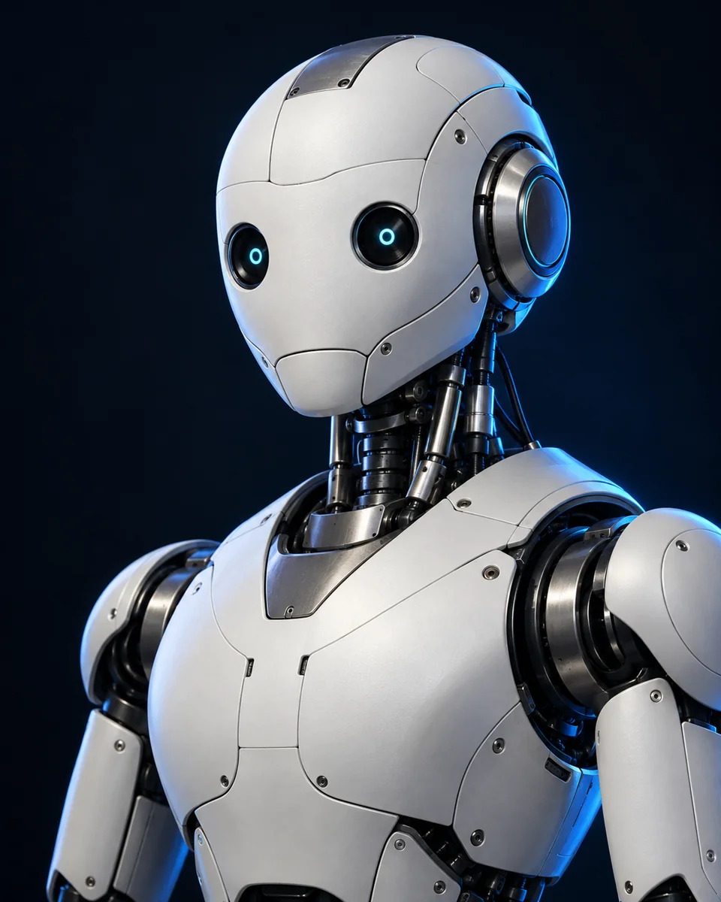

01
Sense the surroundings
Sensors collect information, such as distance, light, or movement, so a robot can respond to what is around it.
For example: A distance sensor detects an obstacle.
Meet the world of robotics
From a vacuum finding its way around a room to a rover exploring another planet, robotics turns code into action.
Discover how robots workA beginner-friendly place to start

ONE FIELD. MANY POSSIBILITIES.
01 / THE BASICS
Robotics brings mechanics, electronics, and programming together. Many robots work through this simple loop.
Sensors collect information, such as distance, light, or movement, so a robot can respond to what is around it.
A controller runs a program that processes sensor information and chooses an action. It may use fixed rules or AI.
Motors and other actuators turn commands into physical action, moving wheels, joints, or a gripper.
Feedback lets the robot check the result and repeat the loop.
02 / OUT IN THE WORLD
Most robots look nothing like people. Their shape follows the job they need to do.
Industrial robot arms weld, paint, and move parts. They can repeat carefully programmed movements in a factory.
Think: a robotic arm assembling a car.
Robotic systems can assist clinicians with controlled movements or help deliver supplies around a hospital.
Think: a surgical system guided by a surgeon.
Robots explore environments that are hard for people to reach, from the deep ocean to the surface of Mars.
Think: a rover collecting data on another planet.
03 / A FEW GOOD QUESTIONS
You do not need to know everything to get started. Begin with the questions that interest you.
No. A robot is a physical machine that carries out tasks. Artificial intelligence is software that can perform tasks such as recognizing patterns. A robot can use AI, but many robots work with programmed rules.
No. Some robots act on their own within set limits, some follow a fixed program, and others are controlled by a person. Different jobs need different levels of human involvement.
Yes. Start with programming and simple simulations. You can practise giving instructions, using conditions, and solving movement problems before working with hardware.
04 / YOUR FIRST STEP
Robotics is about making an idea work in the real world. Pick one small problem and build your understanding a step at a time.
Practise loops and “if this, then that” decisions in a programming language.
Make a virtual robot move, turn, and stop at an obstacle.
Check what happened, change one thing, and try again.